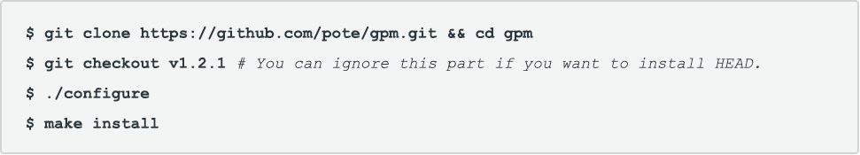

Package Manager for Go
gpm is a minimalistic package manager for Go that leverages the power of the go get command and the underlying version control systems used by it to set your Go dependencies.

gpm is a minimalistic package manager for Go that leverages the power of the go get command and the underlying version control systems used by it to set your Go dependencies.
gpm is a minimalistic package manager for Go that leverages the power of the go get command and the underlying version control systems used by it to set your Go dependencies to desired versions,thus allowing easily reproducible builds in your Go projects.
Go Package Manager makes no assumptions about your dependencies and supports Git, Bazaar and Mercurial hosted Go packages, for a smoother workflow be sure to ckeck out gvp - the Go Versioning Packager wich provides dependency isolation of your projects.
As gpm is a bash script you can always use it directly from GitHub via wget or curl, this is particulary useful for CI servers and other automated environments.
NOTE:You can always use the version on master if you like to live dangerously by piping.